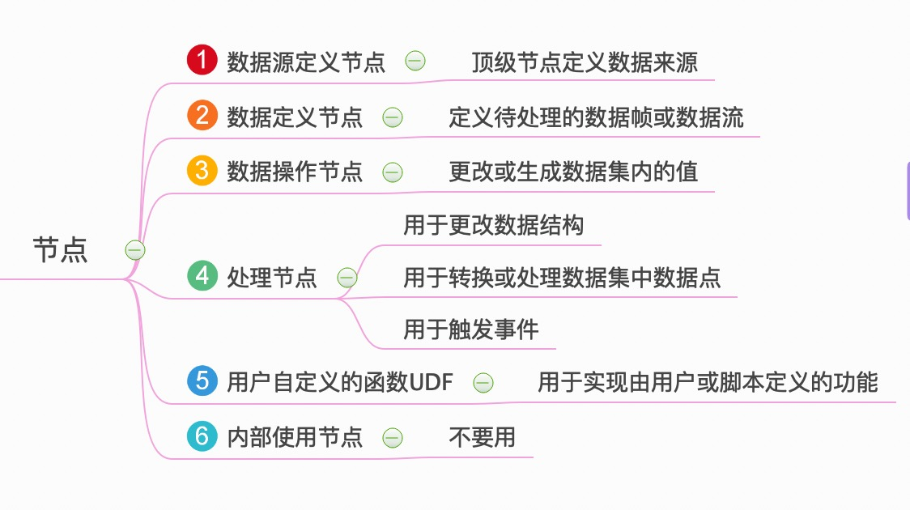

TICKscript节点
节点分类
- A 定义数据获取方式：批、流
- B、C 确定待处理的数据集
- D、E 用于处理数据

| NO. | 节点分类 | 节点 | 含义 |
|---|---|---|---|
| A | 数据源定义节点 | 顶级节点定义数据来源 | |
| A | 数据源定义节点 | BatchNode |
顶级节点，定义了：批处理模式 |
| A | 数据源定义节点 | StreamNode |
顶级节点，定义了：流处理模式 |
| B | 数据定义节点 | 定义待处理的数据帧或数据流 | |
| B | 数据定义节点 | QueryNode |
只能跟着BatchNode |
| B | 数据定义节点 | FromNode |
只能跟着StreamNode |
| B | 数据定义节点 | SideloadNode |
基于来自各种源的分层数据向点添加字段和标签 |
| C | 数据操作节点 | 更改或生成数据集内的值 | |
| C | 数据操作节点 | DefaultNode |
用于为数据系列中的tag和field设置默认值 |
| C | 数据操作节点 | ShiftNode |
用于移动数据点时间戳 |
| C | 数据操作节点 | WhereNode |
用于过滤 |
| C | 数据操作节点 | WindowNode |
用于在移动时间范围内缓存数据 |
| D | 处理节点 | 用于更改数据结构 | |
| D | 处理节点 | CombineNode |
用于将来自单个节点的数据与自身组合在一起 |
| D | 处理节点 | EvalNode |
用于对表达式命名 |
| D | 处理节点 | GroupByNode |
按照标签Tag对传如数据进行分组 |
| D | 处理节点 | JoinNode |
根据匹配的时间戳连接来自任意数量管道的数据 |
| D | 处理节点 | UnionNode |
可以将任意数量的管道进行联合 |
| D | 处理节点 | 用于转换或处理数据集中数据点 | |
| D | 处理节点 | DeleteNode |
从数据点删除字段Field和标记Tag |
| D | 处理节点 | DerivativeNode |
求导数 |
| D | 处理节点 | FattenNode |
在特定维度上展平一组点 |
| D | 处理节点 | InfluxQLNode |
提供对InfluxQL功能的访问 |
| D | 处理节点 | StateDurationNode |
计算给定状态持续时间 |
| D | 处理节点 | StatsNode |
给定时间间隔发出有关另一个节点内部统计信息 |
| D | 处理节点 | BarrierNode |
可以在没有数据流量的情况下执行管道 |
| D | 处理节点 | ChangeDetectNode |
如果字段值发生变化则创建节点 |
| D | 处理节点 | StateCountNode |
计算连续点的在一个给定的状态的数目 |
| D | 处理节点 | 用于触发事件 | |
| D | 处理节点 | AlertNode |
配置警报发射 |
| D | 处理节点 | DeadmanNode |
实际上是辅助函数，它是alert当数据流低于指定阈值时触发的别名 |
| D | 处理节点 | HTTPOutNode |
为其收到的每个组缓存最新数据，使用字符串参数作为最终定位器上下文，使其可通过Kapicator http服务器使用 |
| D | 处理节点 | HTTPPostNode |
将数据发布到字符串数组中指定的HTTP端点 |
| D | 处理节点 | InfluxDBOutNode |
在收到数据时将数据写入InfluxDB |
| D | 处理节点 | K8sAutoscaleNode |
触发Kubernetes™资源的自动缩放 |
| D | 处理节点 | KapacitorLoopback |
将数据写回kapacitor流 |
| D | 处理节点 | SwarmAutoscaleNode |
触发Docker Swarm模式集群上的服务的自动调度事件。该节点还输出触发事件的点 |
| D | 处理节点 | EC2AutoscaleNode |
触发AWS Autoscaling组上的组的自动调度事件 |
| D | 处理节点 | LogNode |
记录通过它的所有数据 |
| E | 用户自定义的函数UDF | UDFNode |
用于实现由用户或脚本定义的功能 |
| F | 内部使用节点 | NoOpNode |
不要用 |
节点属性方法
数据源定义节点
batch or stream？
使用哪个取决于系统资源和正在进行的计算类型。
| Batch | Stream | |
|---|---|---|
| 适应场景 | 时间段长，数据量大 | 时间段较小 |
| 特点 | 触发查询时将导致InfluxDB负载高 | 降低了InfluxDB的查询负载，将数据全部缓存在内存中 |
在长时间内使用大量数据时
batch首选，它会将数据保留在磁盘上，直到需要它为止，但触发时查询将导致数据库突然出现高负载。使用较小的时间帧时
stream是首选。这意味着不必要地将数十亿个数据点保存在内存中，它降低了InfluxDB的查询负载。